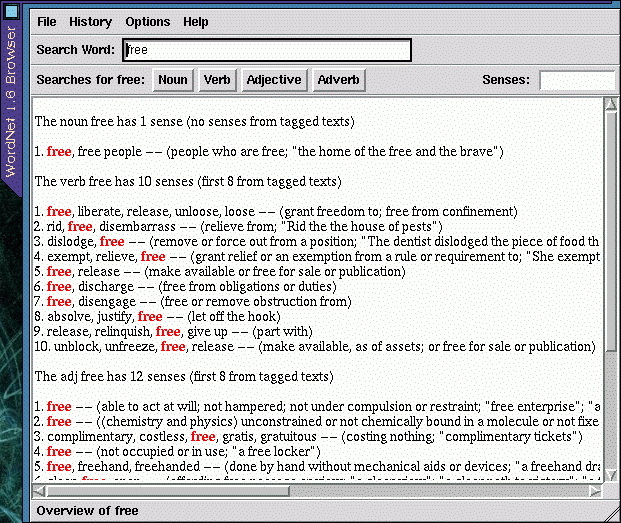
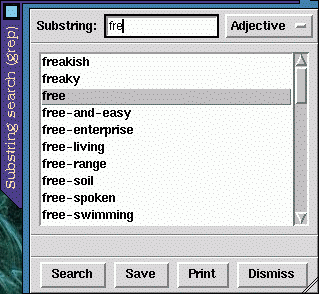

![[ TABLE OF CONTENTS ]](../gx/indexnew.gif)
![[ FRONT PAGE ]](../gx/homenew.gif)


There have been times when I've wished I had dictionary program with a Linux interface. One of my favorite print dictionaries is the American Heritage Dictionary, which I've used and appreciated for many years. Dux Software has been offering a Linux version of their computer interface to the dictionary (combined with a thesaurus) for some time now, but I was deterred by the $49.95 price-tag, considering the existence of a perfectly usable print copy of the book, sitting on a shelf not six feet from where I'm typing this. But there are powers which the computer-based dictionary possesses which can be quite useful. A computer excels at searching for information in a database, and combined with the power of regular expressions a digital dictionary has significant advantages.
The only free digital dictionary I've come across was an old edition of Webster's, available from Project Gutenberg in the form of two large text files. These could be searched for a word with grep, but I was looking for something with an X interface; grep would also find instances of words used within a definition, which would clutter up the output. Of course there are on-line WWW dictionaries, which are fine for people who are on-line most of the time. Users accessing the net via a dial-up connection with an ISP are unlikely to be online while writing text for which a dictionary would be needful. I happened across a usenet posting recently which led me to to this site, and before long I was downloading a 13 mb. archive containing a dictionary/thesaurus called WordNet.
The usenet announcement of the most recent WordNet release contained a
good description of the package:
WordNet is a powerful lexical reference system that combines aspects of dictionaries and thesauri with current psycholinguistic theories of human lexical memory. It is produced by the Cognitive Science Laboratory at Princeton University, under the direction of Professor George Miller. In WordNet, words are defined and grouped into various related sets of synonyms. Not only is the system valuable to the casual user as a powerful thesaurus and dictionary, but also to the researcher as one of the few freely available, lexical databases. WordNet is available via an on-line interface and also as easy-to-compile C source code for Unix.
WordNet consists of interlinked databases of words, synonyms, antonyms, and usage examples. In the best unix tradition, this data can be manually accessed via the command-line. This makes it relatively easy to create script-based interfaces which can simplify the usage of the tool and provide a windowed, menu-driven front-end. The distribution contains the source code for the basic utilities and a Tcl/Tk interface, as well as statically linked binaries and the database files.
One difference between WordNet and a traditional dictionary is the lack of etymologies, a feature typically used much less often than the simple display of meaning and syntax. The inclusion of thesaurus-like features more than makes up for this lack.
A full WordNet installation, consisting of the data-files and the command-line and statically-linked executables, occupies more than thirty megabytes of disk space. This is an ideal job for the e2compr kernel-level transparent file-compression system; I compressed the database directory and reduced it from thirty megabytes to eleven and one-half, with no noticeable speed penalty. See LG #18 (June 1997) for an introduction to e2compr.
Here are a few examples of command-line use of WordNet:
%->wn gazette -over
Overview of noun gazette
The noun gazette has 1 sense (no senses from tagged texts)
1. gazette -- (a newspaper)
Overview of verb gazette
The verb gazette has 1 sense (no senses from tagged texts)
1. gazette -- (publish in a gazette)
wn is the command-line search tool, and the switch -over shows an overview of meaning and parts of speech the word can have.
%->wn gaz -grepn
Grep of noun gaz
gaza strip
gazania
gazania rigens
gaze
gazebo
gazella
gazella subgutturosa
gazella thomsoni
gazelle
gazelle hound
gazette
gazetteer
The switch -grepn searches the noun database for any noun containing the string gaz; there are variants of this switch: -grepv, -grepa, and -grepr, which respectively search for verbs, adjectives, and adverbs. The various grep switches can be used to determine the correct spelling of a word when you are certain of the spelling of only a syllable or portion of the word.
%->wn quell -framv
Sample Sentences of verb quell
2 senses of quell
Sense 1
squelch, quell
*> Somebody ----s something
Sense 2
quell, stay, appease
*> Something ----s
*> Something ----s somebody
The -framv switch used above shows how the word is used in sentences.
%->wn quell -simsv
Synonyms (Grouped by Similarity of Meaning) of verb quell
Sense 1
squelch, quell
=> suppress, stamp down, inhibit, subdue, conquer, curb
--------------
Sense 2
quell, stay, appease
=> meet, satisfy, fill, fulfill
--------------
The -simsv switch shows verb synonyms, and a variant -simsn lists the noun synonyms of a word.There are a plethora of other wn switches for finding antonyms, homonyms, and several other more obscure lexical types, many of which have easier-to-use equivalents in the Tcl/Tk windowed interface, wnb, which stands for WordNet Browser.
Here are screenshots of the browser window and a subsidiary sub-string
window, which takes the place of the -grep[nvar] switches used with
wn.


This is a convenient and easy-to-use interface, with all functions available from the menus. The output, though, isn't wrapped to fit the screen, so to avoid having to scroll sideways to see it all the window should be resized so that it is wider horizontally. You might be tempted (as I was) to try compiling the source code, so that the wnb executable will use your own Tcl/Tk libraries rather than the bulky statically-linked libraries compiled into the supplied executable file. Unless you happen to have the particular patch-level of Tcl-7.6 and Tk-4.2 which the source needs, it probably won't compile (at least it wouldn't for me). If the wnb interface was just a Tk script, it wouldn't be a big job to modify it so that it uses a particular Tcl/Tk installation, but wnb has its own specialized wish interpreter, which complicates updating the source for a newer version of Tcl/Tk. Since the supplied Tcl/Tk interface is just a convenient way of viewing the output from wn, perhaps a GTK, Qt, or Emacs-LISP interface could be coded; this would make a welcome addition to the KDE and GNOME projects. I've found that a handy way to run wn is in a separate wide-and-short XEmacs shell-buffer frame.
The documentation supplied with the distribution is complete and clearly written; it's all an end-user should need. HTML, Postscript, and man-page formats are included to cater to various reading preferences. If you are curious about the psycholinguistic theoretical underpinnings of the project, a Postscript file (5papers.ps) is available from the web-site.
While writing this article I happened to be paging through the introductory essays in the American Heritage dictionary. One of these essays was written by one of the linguists responsible for the work which inspired the WordNet project, Henry Kucera. It's called Computers in Language Analysis and Lexicography, and it's a more general (though dated) overview of psycholinguistics than the above mentioned collection of papers. If you're wondering just what in the world the "Browne Corpus" is (mentioned on the WordNet web-site), this essay explains it clearly.
WordNet isn't licensed under the GPL, but the license isn't very restrictive at all. The utilities and programs needed to create the word databases are not distributed, but the supplied files are sufficient for most needs.
WordNet can be obtained from its home site, but this is a really slow site, and I had better luck obtaining the archive from this mirror site in Germany. As useful as this package is, it really should be mirrored elsewhere as well.